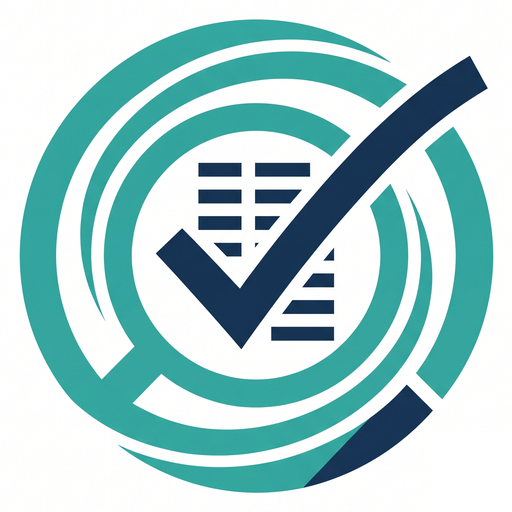

HireLens
LiveAI-powered CV rating platform
A CV rating tool built around how Pakistani recruiters actually screen, not how a Western résumé tool assumes they do.
The backend runs on a free Hugging Face tier, which puts it to sleep after about 48 hours. If it's asleep when you visit, message me and I'll wake it up.
The problem
I built this from my own job search. Generic CV scorers weigh things a Pakistani recruiter doesn't, and miss what they do: university tier, whether you list a CGPA, mixed English and Urdu content, and the fast triage that platforms like Rozee.pk force. So I built a rater that reads a CV the way a local recruiter would.
How it works, with a worked example
- Upload a CV.PDF, PNG or JPG.
- It reads the file.Text PDFs are read directly. If a PDF yields fewer than 30 characters, it's treated as a scan and run through OCR. Photos go straight to OCR, after a grayscale and contrast cleanup.
- Pick the role.Choose from 115+ roles, or type it freely, like "someone who builds mobile apps". The closest role is found by meaning, not exact words. If the match is weak, it says so and points you to the dropdown instead of faking confidence.
- The model rates six categories.Format, university, experience, skills, clarity and red flags, each scored 1 to 10 with a specific comment.
- Code computes the overall score.A fixed weighting turns the six scores into one number. The model never gives the headline score.
| Category | Weight | Score | Contribution |
|---|---|---|---|
| Skills | 28% | 8 | 2.24 |
| Experience | 28% | 6 | 1.68 |
| University | 14% | 5 | 0.70 |
| Red flags | 14% | 7 | 0.98 |
| Clarity | 10% | 7 | 0.70 |
| Format | 6% | 8 | 0.48 |
| Overall | 6.8 |
These numbers are made up to show the mechanics. The same scores always produce the same total. Skills and experience carry 56% of it, and formatting carries 6%. That weighting is my judgment, not a validated figure.
Design decisions
The model rates, code scores
An LLM's own overall score drifts from run to run. A weighted average doesn't.
Never trust the model's output
The model is told to return raw JSON. The backend strips code fences if they appear, falls back to a pattern match to find the JSON, and returns a clear error if it still can't parse the reply.
Reject bad uploads early
A size cap and a check of the file's real signature, not just its extension, stop a mislabeled file from getting through. Empty and corrupted files return a clear error instead of crashing the server.
Anchored scores
The prompt defines what a 2, a 6 and a 9 mean to a hiring manager, so scores don't all cluster in the safe middle.
Bugs I'm glad I hit
A July internship flagged as fake
The model judged dates against its own stale sense of "now" and called a current-month internship future-dated. The fix: pass today's date into every request and treat it as the only reference.
OCR worked locally and died in production
I had hardcoded Windows paths for Tesseract and Poppler. On the Linux host, every image upload failed. The fix: find both tools automatically, with a Windows fallback.
Web verification that hit rate limits
I tried letting Gemini search the web to verify universities and employers. It hit quota errors after a couple of requests, so I reverted to plain generation.
Where it stands
Live and tested end to end. It runs on free tiers, which is why the backend sleeps when it isn't used. The ratings haven't been compared with real HR professionals yet. That is the next real test.
What's next
Validate the ratings against real Pakistani recruiters. Then batch ranking for one role, a downloadable report, and accounts with history.